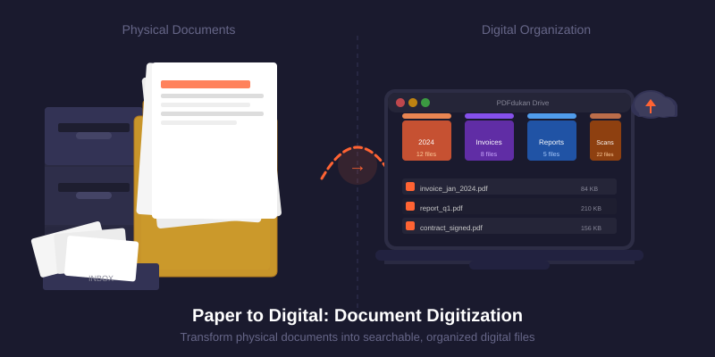
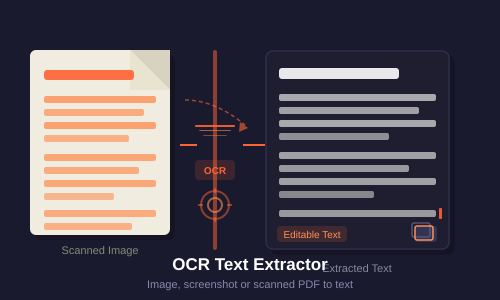

How to Scan Documents on Your Phone for Free
Free ways to scan on iPhone, Android or any browser, and save a clean PDF.
To scan documents on your phone for free, use a scanner it already has. That means Notes or Files on an iPhone, Google Drive on most Android phones, or a browser tool such as the PDFdukan scanner. Each one crops the photo to the page, cleans it up and saves a PDF.

Which Free Scanner Is Already on Your Phone?
iPhones and most Android phones include a free document scanner, so you rarely need to download anything. The right one depends on your phone and where you want the file saved.
| Option | Phone | Where to find it | Saves as |
|---|---|---|---|
| Notes | iPhone, iPad | Attachment button › Scan Documents | A scan inside a note |
| Files | iPhone, iPad | More button › Scan Documents | A file in the location you choose |
| Google Drive | Most Android phones | Camera icon, or Add › Scan | PDF or JPG in your Drive |
| Files by Google | Android | Its built-in scan feature | Searchable PDF |
| Camera app | Some Samsung Galaxy models | Point the camera at the page | A saved scan |
| PDFdukan scanner | Any phone with a browser | pdfdukan.com/scanner.html | PDF or JPG on your device |
Android has no single scanner that every phone shares. Google Drive comes preinstalled on most Android phones, which makes it a good first stop.
How Do You Scan a Document on an iPhone?
An iPhone scans documents through the Notes app, and Apple's own steps are short:
- Open Notes and select a note or create a new one.
- Tap the Attachment button, then tap Scan Documents.
- Place the document in view of the camera. In iOS 26 you can also pick flash or an image filter.
- In Auto mode the page scans by itself. Otherwise tap the Shutter button or press a Volume button, drag the corners to fit the page, and tap Keep Scan.
- Tap Done, or keep scanning to add more pages.
The Files app offers the same Scan Documents option under its More button. Use Files when you want a standalone document, because it asks where to save it.
How Do You Scan a Document on Android?
Android phones scan documents through Google Drive, which saves the result as a PDF straight to your Drive (Google's help page lists the same steps):
- Open the Google Drive app and tap the Camera icon, or tap Add and choose Scan.
- Point the phone at the document and take the photo. A blue outline shows where the page will be cropped.
- Fine-tune the result with Crop & Rotate, Filter or Clean, and add more pages if you need them.
- Tap Done, name the file, choose PDF or JPG, pick a folder and tap Save.
Some Samsung Galaxy phones scan straight from the camera. Point it at the page, wait for the scan prompt and tap it. Keep the whole sheet in the frame, or the phone may miss a corner.
How Do You Scan Without Installing an App?
A browser-based scanner works on any phone, including older models and work phones where you can't install apps. The PDFdukan scanner runs on the page itself, with no download and no account.
Open the scanner, tap Upload Images, and either pick a photo or let your phone's picker open the camera. The tool proposes the page corners for you, and you can drag them if the guess is off. Choose a filter such as Magic Pro or B&W, then export a PDF or a JPG with your own file name.
Everything happens in your browser, so the photo isn't uploaded to a server. That matters for tax forms, leases and IDs.
How Do You Get a Clean, Readable Scan?
A clean phone scan comes from the setup, not the app: light, background and angle decide whether the text stays sharp.
Use bright, even light with no harsh shadow or glare. Your own hand and phone often throw a shadow across the page, so light from the side usually works better than a lamp directly overhead.
Put a white page on a dark, flat surface. The contrast lets the scanner find the borders and crop accurately on the first try.
Hold the phone parallel to the page and keep it steady. A tilted phone produces a skewed page, and a shaky one produces blur that no filter can fix.
If a scan still looks soft, wipe the lens and retake it. A smudged lens is one of the most common causes of a blurry phone scan.
Where Does Your Scan End Up?
Where a scan is saved depends on the tool, so check it before you scan anything private, like a passport or a bank letter.
Google Drive saves scans to your Drive, in the folder you pick on the save screen. Notes keeps the scan inside a note, while the Files app asks you for a location. A browser scanner like PDFdukan's downloads the file to your phone and keeps nothing online. Delete copies you no longer need, especially of IDs.
What Should You Do With the Scan After You Save It?
A saved scan is most useful as a PDF, because it keeps every page together and opens the same way on any device. Choose JPG only when a website asks for an image upload.

If you need the words, not just the picture, run the image through OCR text extraction to copy and search the text. Scanned several pages as separate images? Combine them with Image to PDF.
If an upload form rejects a large file, compress the image first, then check that small text is still readable.
When Is a Phone Not Enough?
A phone handles receipts, forms and letters well, but a desktop scanner wins once scanning becomes a weekly routine. Hundreds of pages or double-sided stacks take far longer one photo at a time. For a backlog, start with our document digitization guide before you buy hardware.
Frequently Asked Questions
Scan in your browser
Open the PDFdukan scanner → Free, no app or account needed.